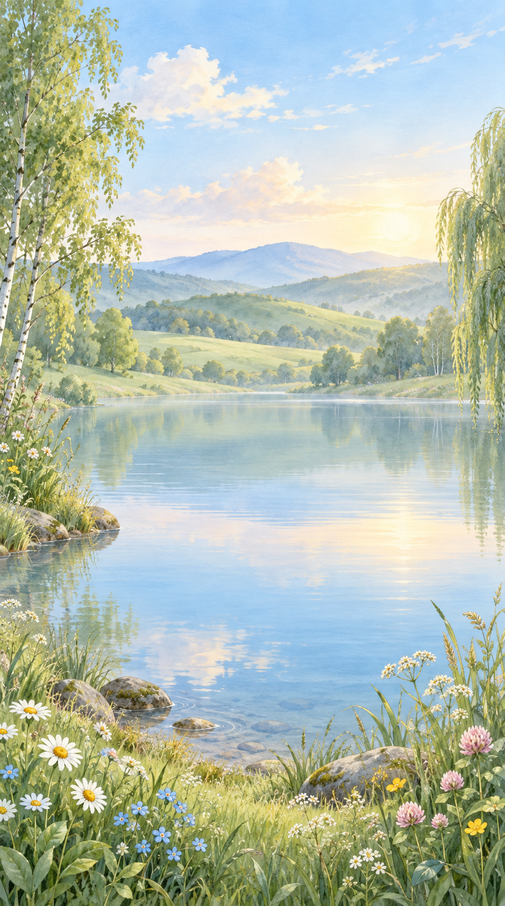
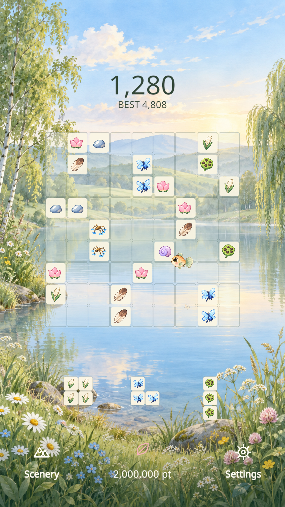

A GARDEN TO CALL YOUR OWN
BloomGleeBloomGleeBloomGleeBloomGleeBloomGlee
BloomGlee · FNDG
꽃과 잎사귀 블록을 놓고, 작은 정원을 채워보세요. 한 줄이 완성되면 꽃잎이 흩날리고, 조합이 이어지면 정원이 더 크게 반짝입니다.Place flowers and leaves, and make a little room to bloom. Complete a line for a shower of petals, then discover combinations that light up the garden.花や葉のブロックを置いて、小さな庭を彩りましょう。一列そろうと花びらが舞い、組み合わせが決まると庭がいっそう輝きます。摆放花朵与叶片方块，装点小小的花园。填满一行，花瓣纷飞；组合成功，花园便绽放更多光彩。擺放花朵與葉片方塊，裝點小小的花園。填滿一行，花瓣紛飛；組合成功，花園便綻放更多光彩。
웹 버전 무료 공개 · Android 버전 출시 준비 중Free web version · Android release in preparationWeb版を無料公開 · Android版はリリース準備中网页版免费开放 · Android版准备发布中網頁版免費開放 · Android版準備發佈中
첫 실행 시 약 193MB를 내려받습니다. 잠시만 기다려 주세요.The first load downloads about 193 MB. Please allow a little time.初回は約193MBのゲームデータを読み込みます。しばらくお待ちください。首次启动需要下载约193MB的游戏文件，请稍候。首次啟動需要下載約193MB的遊戲檔案，請稍候。

잠깐 쉬어가는, 나만의 정원A little room to slow downひと息つける、自分だけの庭慢下来，走进自己的小花园慢下來，走進自己的小花園
아침부터 밤까지Morning to night朝から夜へ从清晨到夜晚從清晨到夜晚
23개 언어 옵션23 language options23の言語設定23种语言选项23種語言選項
REAL GAMEPLAY
Watch your little garden bloom
See real gameplay: place a block and follow the petals as combinations unfold.
Playing connects to YouTube. Choosing another language stops playback.
FNDG on YouTubeHOW TO PLAY
이렇게 즐겨요A simple way to unwind遊び方はシンプル轻松上手輕鬆上手

블록을 놓아요Make roomブロックを置く摆放方块擺放方塊
아래의 블록을 9×9 보드의 빈 곳으로 끌어 놓으세요. 블록 세 개를 모두 쓰면 다음 세트가 나옵니다.Drag blocks from the tray onto empty spaces in the 9×9 board. Use all three pieces to receive the next set.下のブロックを9×9の盤面の空きマスへドラッグ。3つすべて使うと次のセットが出てきます。将下方的方块拖到9×9棋盘的空位。三个方块全部用完后，就会出现下一组。將下方的方塊拖到9×9棋盤的空位。三個方塊全部用完後，就會出現下一組。
한 줄, 혹은 작은 정원Complete a line or a square一列、または小さな区画を完成填满一行或一个小区域填滿一行或一個小區域
가로·세로 한 줄이나 표시된 3×3 구획을 채우면 사라집니다. 꽃과 잎의 조합에 따라 색다른 연출과 추가 점수를 만나보세요.Fill a row, column or marked 3×3 box to clear it. Flower and leaf combinations bring different effects and bonus points.横一列、縦一列、または区切られた3×3の区画を埋めると消えます。花や葉の組み合わせで演出とボーナス点が変わります。填满横行、竖列或标出的3×3区域即可消除。花与叶的不同组合会带来不同特效和额外分数。填滿橫行、直列或標出的3×3區域即可消除。花與葉的不同組合會帶來不同特效和額外分數。
서두르지 않아도 괜찮아요Take your time急がなくて大丈夫不用着急不用著急
시간 제한은 없어요. 남은 블록을 더는 놓을 수 없을 때 한 판이 끝납니다. 모은 포인트로 새로운 풍경을 열어보세요.There is no timer. A round ends when none of your remaining pieces fit. Spend earned points to unlock new scenery.時間制限はありません。残りのブロックがどれも置けなくなると終了。集めたポイントで新しい風景を開きましょう。没有时间限制。当剩余方块都无法放置时，本局结束。用积累的点数解锁新的风景吧。沒有時間限制。當剩餘方塊都無法放置時，本局結束。用累積的點數解鎖新的風景吧。
FOUR TIMES OF DAY
블록을 놓는 동안, 풍경도 천천히Let the scenery unfold遊ぶうちに、景色もゆっくり変わる一边拼图，一边看风景变换一邊拼圖，一邊看風景變換
아침, 오후, 저녁, 밤. 플레이하며 시간대가 바뀌고, 들판 위로 새와 나비가 지나갑니다. 산, 들, 강, 설원의 배경은 모은 포인트로 열 수 있어요.Morning, afternoon, evening and night unfold as you play, with birds and butterflies over the meadow. Unlock mountain, field, river and snowfield backgrounds with earned points.朝、昼、夕方、夜。プレイに合わせて時間帯が移り、草原には鳥や蝶が訪れます。山、野原、川、雪原の背景はポイントで開放できます。清晨、午后、傍晚、夜间，随游玩逐渐变化，鸟与蝴蝶掠过草地。山、原野、河流和雪原背景可以用积累的点数解锁。清晨、午後、傍晚、夜間，隨遊玩逐漸變化，鳥與蝴蝶掠過草地。山、原野、河流和雪原背景可以用累積的點數解鎖。
호숫가 들판은 처음부터 열려 있습니다. 산·들·강·설원은 각각 100,000포인트, 고양이·강아지 정원은 각각 200,000포인트로 열 수 있습니다. 각 풍경의 동물은 풍경을 연 뒤 300,000포인트로 만나세요. 포인트는 한 판을 마친 뒤 적립됩니다.The lakeside meadow is available from the start. Mountains, fields, the river and snowfield each unlock for 100,000 points; cat and dog gardens each cost 200,000 points. Once a landscape is unlocked, its animal companion costs 300,000 points. Points are credited after a round ends.湖の草原は最初から遊べます。山・野原・川・雪原はそれぞれ100,000ポイント、猫と犬の庭はそれぞれ200,000ポイントで開放できます。風景を開放すると、その動物を300,000ポイントで迎えられます。ポイントはラウンド終了後に加算されます。湖畔草地从一开始即可游玩。山、原野、河流和雪原各需100,000点数，猫咪花园和狗狗花园各需200,000点数。解锁风景后，可用300,000点数解锁对应动物。点数在每局结束后结算。湖畔草原從一開始即可遊玩。山、原野、河流和雪原各需100,000點數，貓咪花園和狗狗花園各需200,000點數。解鎖風景後，可用300,000點數解鎖對應動物。點數在每局結束後結算。
웹 버전 안내About the web versionWeb版について网页版说明網頁版說明
현재 보드·대기 블록·점수, 정산한 포인트, 해금한 풍경과 동물, 설정은 이 브라우저에 저장됩니다. 사이트 데이터를 지우면 저장된 기록도 지워지며, Android나 다른 브라우저와 연동되지 않습니다.Your board, waiting pieces, score, settled points, unlocked landscapes and animals, and settings are saved in this browser. Clearing site data removes these records. Saves do not sync with Android or other browsers.現在の盤面・待機中のブロック・スコア、精算済みポイント、開放した風景と動物、設定はこのブラウザに保存されます。サイトデータを消すと記録も消えます。Androidや別のブラウザとは同期しません。当前棋盘、待用方块、分数、已结算点数、已解锁风景与动物及设置保存在此浏览器中。清除网站数据也会清除记录，不与Android或其他浏览器同步。目前棋盤、待用方塊、分數、已結算點數、已解鎖風景與動物及設定儲存在此瀏覽器中。清除網站資料也會清除紀錄，不與Android或其他瀏覽器同步。
BloomGlee는 광고와 현금 결제가 없는 무료 게임입니다. 모든 풍경과 동물은 플레이로 모은 포인트로 열 수 있습니다. Android 스토어 공개는 아직 진행하지 않았습니다.BloomGlee is free, with no ads or cash purchases. Every landscape and animal can be unlocked with points earned by playing. The Android store release has not been published yet.BloomGleeは広告や課金のない無料ゲームです。すべての風景と動物は遊んで獲得したポイントで開放できます。Android版のストア公開はまだ行っていません。BloomGlee是一款无广告、无现金购买的免费游戏。所有风景与动物都能用游玩获得的点数解锁。Android商店版本尚未发布。BloomGlee是一款無廣告、無現金購買的免費遊戲。所有風景與動物都能用遊玩獲得的點數解鎖。Android商店版本尚未發佈。
이 페이지에는 자체 광고·분석 스크립트를 추가하지 않았습니다. 영상 재생 시 YouTube에 연결되며 해당 서비스의 개인정보 처리방침이 적용됩니다. 게임 저장에는 브라우저의 로컬 저장소를 사용하며, 페이지와 게임 파일은 GitHub Pages에서 제공합니다.We add no advertising or analytics scripts of our own to this page. Playing a video connects to YouTube under its privacy policy. Game saves use local browser storage; GitHub Pages serves the page and game files.このページに独自の広告・解析スクリプトは追加していません。動画の再生時はYouTubeに接続し、同サービスのプライバシーポリシーが適用されます。ゲームの保存にはブラウザのローカルストレージを使用し、ページとゲームはGitHub Pagesから配信されます。本页面未添加自有广告或分析脚本。播放视频时会连接YouTube，并适用该服务的隐私政策。游戏存档使用浏览器本地存储；页面与游戏文件由GitHub Pages提供。本頁面未加入自有廣告或分析指令碼。播放影片時會連線至YouTube，並適用該服務的隱私權政策。遊戲存檔使用瀏覽器本機儲存空間；頁面與遊戲檔案由GitHub Pages提供。
음악 크레딧과 라이선스Music credits and licenses音楽クレジットとライセンス音乐制作与许可音樂製作與授權